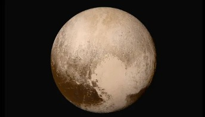
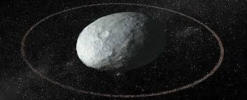
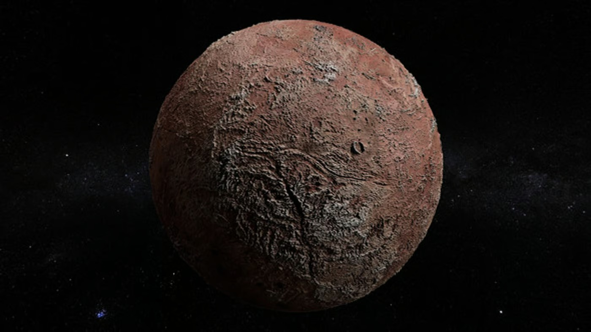
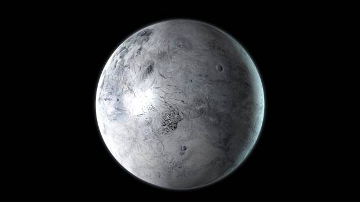

An Overview on Dwarf Planets
Dwarf planets are celestial bodies that share characteristics with planets but fall short of meeting all the criteria established by the International Astronomical Union (IAU). These intriguing objects offer valuable insights into the composition and dynamics of our solar system.
Characteristics of Dwarf Planets
- Solar Orbit: Dwarf planets revolve around the Sun, similar to the eight recognized planets.
- Nearly Spherical Shape: Their sufficient mass enables them to achieve a nearly round shape through self-gravity.
- Non-Satellites: Dwarf planets are independent celestial objects and not moons of other planets.
- Shared Orbital Space: Unlike traditional planets, they do not clear their orbital paths of other objects such as asteroids or debris.
Ceres

Ceres is the smallest of the recognized dwarf planets in our solar system and the only one located in the asteroid belt between Mars and Jupiter. Despite its relatively small size, with a diameter of about 952 kilometers (592 miles), Ceres holds immense significance in planetary science. It comprises about a third of the total mass of the asteroid belt, making it by far the largest object in that region.
Ceres is believed to have a solid core and an icy mantle, with a dusty and rocky crust covering its surface. Scientists suspect that a significant portion of Ceres' composition—up to 25%—is ice. This makes it an intriguing candidate for studying water in the early solar system. The dwarf planet’s surface is marked by bright salt deposits, most notably within the Occator Crater. These deposits suggest that liquid water or briny subsurface reservoirs may have once existed beneath its surface. NASA’s Dawn spacecraft, which orbited Ceres between 2015 and 2018, provided strong evidence of possible deep water reservoirs that could have interacted with the surface due to asteroid impacts.
Another interesting aspect of Ceres is its potential origins. Some scientists theorize that Ceres did not form in the asteroid belt but rather in the outer solar system before migrating inward. This hypothesis is supported by the presence of water-related minerals on Ceres, which resemble those found on icy moons in the outer solar system. Ceres is named after the Roman goddess of agriculture, and the word cereal shares the same root.
Pluto

Pluto, once the ninth planet of the solar system, is now the most famous of the dwarf planets. Discovered in 1930 by Clyde Tombaugh, Pluto was reclassified as a dwarf planet in 2006 due to its inability to clear its orbit of other debris. With a diameter of about 2,380 kilometers (1,400 miles), Pluto is roughly two-thirds the size of Earth’s Moon and is virtually the same size as Eris, another dwarf planet.
Pluto has a highly elliptical orbit that takes it as far as 49 astronomical units (AU) from the Sun, making it an extremely cold world. Its surface temperature can drop as low as -240°C (-400°F), and its surface is covered with a mixture of nitrogen, methane, and carbon monoxide ices. When NASA’s New Horizons spacecraft flew by Pluto in 2015, it revealed a surprisingly dynamic world with mountains of water ice, a smooth, glacier-like heart-shaped region called Sputnik Planitia, and an atmospheric haze that creates a bluish glow.
One of the most fascinating discoveries about Pluto is the possibility that it may have an underground ocean beneath its icy shell. Some planetary scientists believe this subsurface ocean, if it still exists, could harbor conditions suitable for microbial life. Pluto also has a complex system of five moons: Charon, Styx, Nix, Kerberos, and Hydra, with Charon being nearly half the size of Pluto itself. Scientists believe these moons formed from a massive collision, similar to how Earth's Moon was created.
Pluto is named after the Roman god of the underworld, fitting for a world that resides in the cold, distant reaches of our solar system.
Haumea

Haumea stands out among the dwarf planets due to its elongated, egg-like shape, which is a result of its extremely rapid rotation. Completing a full rotation in just four hours, Haumea spins faster than any other known large object in the solar system. This rapid rotation causes it to stretch into an oblong shape rather than being spherical. Its longest axis measures approximately 2,322 kilometers (1,442 miles) across.
Haumea is also unique because it has a ring system, making it one of the few celestial bodies in our solar system with rings besides the giant planets and the asteroid Chariklo. These rings were discovered in 2017 when astronomers observed Haumea passing in front of a star, causing unexpected dips in brightness.
Haumea is located in the Kuiper Belt, a region of icy bodies beyond Neptune. It is thought to have formed from a collision with another large Kuiper Belt object, which may explain both its rapid rotation and its ring system. Haumea is accompanied by two moons, Hi'iaka and Namaka, which are believed to have formed from the same impact event.
Haumea is named after the Hawaiian goddess of fertility, and its moons are named after her daughters in Hawaiian mythology.
Makemake

Makemake is one of the largest known Kuiper Belt objects and was discovered in 2005. It is slightly smaller than Haumea, with a diameter of about 1,426 kilometers (886 miles). Like Pluto, Makemake has a reddish hue, likely due to a surface covered in frozen methane and other hydrocarbons. However, unlike Pluto, it has very little nitrogen ice.
Makemake has a relatively long rotation period of 22.5 hours, which is similar to Earth's day length. One of the most intriguing aspects of Makemake is its moon, MK2, discovered in 2016 using the Hubble Space Telescope. MK2 is thought to be very dark compared to the bright surface of Makemake, suggesting it lacks the same icy covering.
Since Makemake is so far from the Sun, its surface temperature is extremely cold, averaging around -239°C (-398°F). Its distant orbit ensures that it remains one of the least explored dwarf planets, though future missions could reveal more about its composition and history.
Makemake is named after a fertility god from the mythology of the Rapa Nui people, the indigenous inhabitants of Easter Island.
Eris
